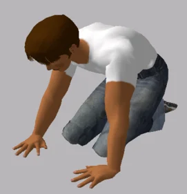

Are shops disappearing from maps? Here's why
If you can't find your favourite shops on the map, check your ISCS social credit score
Alasera Liszic · Technology · Domestic · 12 August 2055
This article is 14 years old and may be out of date. It is kept here for archival purposes.
For the past few months, shops and businesses across Malaszec have been disappearing from the maps of certain GPS apps due to the new Customer Trust pilot program. Customer Trust uses the International Social Credit System (ISCS) adopted a few years ago and allows business owners to list their the ISCS score range of their target customer base. Map app users who have their ISCS identity linked are recommended shops based on how well their ISCS score matches up with the store's target range, in addition to the user's interests. Users with lower scores than a store's target range will not see the store on the map by default. These stores also won't be recommended to them on restaraunt review apps, or highlighted when they walk past them if they're wearing smart glasses.
Customer Trust streamlines your evening by using the ISCS's blockchain technology to reccommend exactly the right businesses for you.
"One of the most frustrating things about finding somewhere to spend the evening is seeing a restaraunt on an app, tapping on it, and realizing that it's too expensive," says Narod Obeniszijn, a PR representative for Sevorod ZE, one of the companies that spearheaded the Customer Trust program. "Customer Trust streamlines your evening by using the ISCS's blockchain technology to reccommend exactly the right businesses for you. If you're in a group and you're worried that you're going somewhere too expensive for some of the people in your group, you can link with them on Customer Trust apps and it will automatically take them into account. Now there's no more feeling bad about ordering the side salad while everyone else is having something fancy."
It's not just restaraunts either— all kinds of businesses including botiques, apothecaries, and bars can participate in Customer Trust, although only a select number of businesses are eligible during the pilot program stage. The owner of The Mezzanine nightclub in Anelije, who wishes to remain anonymous, has stated that they are using Customer Trust to reduce incidents of harassment by unruly individuals. "Problem customers upset people and are bad for business. Customer Trust helps me filter out people who are likely going to be an issue giving both me and my customers some piece of mind."
The downside of this is that it can be jarring for locations to suddenly disappear from the map for some users. Ever since apps have started to enable Customer Trust features, some netizens have become quite alarmed.
 @dsfjdklsfj
all im seeing on my map are snackoo marts and im like whaaat 😕😕🤔🤔🤔
3 Likes · 1 Share · 2 Aug 2055
For those who are concerned about missing out, users can typically opt-out of Customer Trust from within participating apps or unlink their ISCS identity from their device. However, some app vendors have stated that they will be removing the ability to opt-out once Customer Trust is out of the pilot stage.